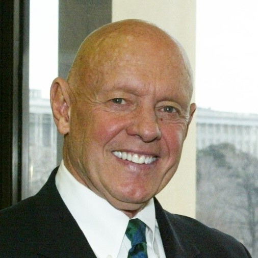
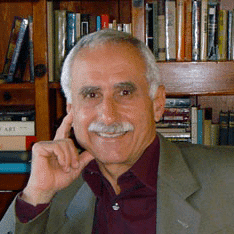
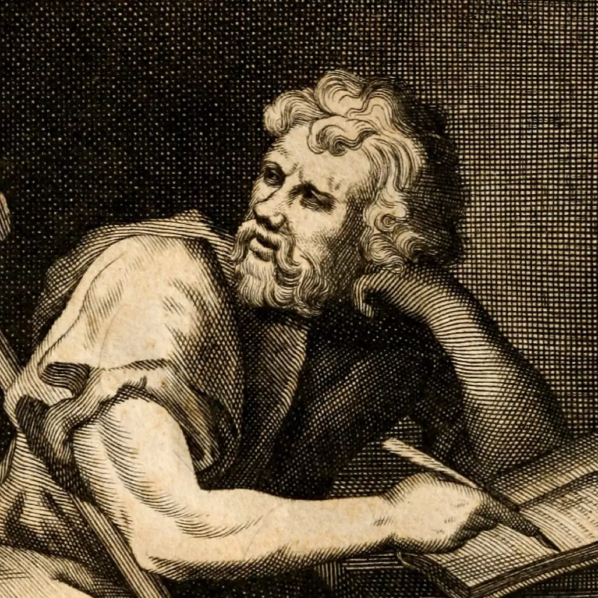

Samarali Muloqot Sirlari
-
1. Tinglash
Samarali muloqotning eng muhim qismi — tinglash. Suhbatdoshni bo‘lmasdan, diqqat bilan eshitish kerak. Ko‘z bilan aloqa qilish, bosh irg‘ash va reaksiya bildirish odamga hurmat va qiziqish ko‘rsatadi.
-
2. Aniq va oddiy gapirish
Fikrni murakkablashtirmasdan, sodda va tushunarli yetkazish kerak. Qisqa va ravshan gaplar suhbatni osonlashtiradi va noto‘g‘ri tushunishni kamaytiradi.
-
3. Tana tili
Yuz ifodasi, ko‘zga qarash, qo‘l harakatlari katta ahamiyatga ega. Ochik va ishonchli tana tili suhbatni ijobiy qiladi.
-
4. Ovoz ohangi
Bir xil so‘z turli ohangda turlicha qabul qilinadi. Yumshoq, xotirjam ohang muloqotni samaraliroq qiladi.
-
5. Hurmat saqlash
Suhbat davomida boshqalarni hurmat qilish zarur. Masxara, qo‘pol so‘z yoki kamsitish muloqotni buzadi.
-
6. Savol berish
To‘g‘ri savollar suhbatni rivojlantiradi. Savol berish suhbatdoshning fikrini tushunishga yordam beradi.
-
7. Emotsiyalarni boshqarish
Jahlda gapirish ko‘pincha muammo keltirib chiqaradi. Xotirjamlikni saqlash samarali muloqot uchun muhim.
-
8. Empatiya
Suhbatdoshning his-tuyg‘ularini tushunishga harakat qilish kerak. Bu ishonchni oshiradi va munosabatlarni mustahkamlaydi.
-
9. Moslashuvchanlik
Har bir odam va vaziyat har xil. Suhbat uslubini vaziyatga qarab o‘zgartirish samarali muloqotga yordam beradi.
-
10. Ijobiy munosabat
Do‘stona ohang, ochiq yuz va pozitiv kayfiyat suhbatni yengil va yoqimli qiladi. Ijobiy energiya muloqotni kuchaytiradi.
Mashhur Odamlarning Mashhur Gaplari
-
1. Dale Carnegie
"Oxir-oqibat, eng katta muloqot muammosi – biz tushunish uchun emas, javob berish uchun tinglaymiz."
-
2. Stephen R. Covey

"Avval tushunishga harakat qil, keyin tushuntirishga"
-
3. Albert Mehrabian

"His-tuyg‘ular yoki munosabatlarni ifodalashda, so‘zlar faqat 7 foizga ta’sir qiladi, ovoz ohangi 38 foizni tashkil qiladi, qolgan 55 foiz esa tana tili va yuz ifodalariga bog‘liq."
-
4. Peter Drucker
"Muloqotdagi eng muhim narsa — aytilmagan narsani eshitishdir."
-
5. Carl Rogers
"Empatik tinglash — bu boshqani chin qalbdan qiziqish bilan va tushunishga harakat qilib tinglashdir."
-
6. Epictetus

"Bizda ikki quloq va bitta og‘z bor, shunda gapirishdan ko‘ra ikki barobar ko‘proq tinglashimiz mumkin."
Mashhur Odamlar
-
-Dale Carnegie (1888–1955)
amerikalik muloqot psixologiyasi, motivatsiya va shaxsiy rivojlanish mutaxassisi.
Eng mashhur asari: “How to Win Friends and Influence People” (Do‘stlar orttirish va odamlarni ilhomlantirish yo‘llari)
U insonlar bilan samarali muloqot qilish
Carnegie fikricha: samarali muloqotning siri tushunishga harakat qilish, tinglash va boshqalarni qadrlash.
U shaxsiy rivojlanish va biznes kommunikatsiyasida katta ta’sir ko‘rsatgan, bugungi kunda ham uning metodlari keng qo‘llaniladi.
-
Stephen R. Covey (1932–2012) -
amerikalik liderlik, shaxsiy rivojlanish va samarali muloqot bo‘yicha ekspert.
Eng mashhur asari: “The 7 Habits of Highly Effective People” (Yuqori samarali odamlarning 7 odati)
Coveyning fikricha, samarali muloqot va munosabatning asosi - avval tushunishga harakat qilish, keyin tushuntirishga.
U shuningdek, shaxsiy intizom, maqsadga yo‘naltirilgan hayot va jamoada samarali ishlash bo‘yicha maslahatlar bergan.
Covey metodlari bugungi kunda biznes, ta’lim va shaxsiy rivojlanish sohalarida keng qo‘llaniladi.